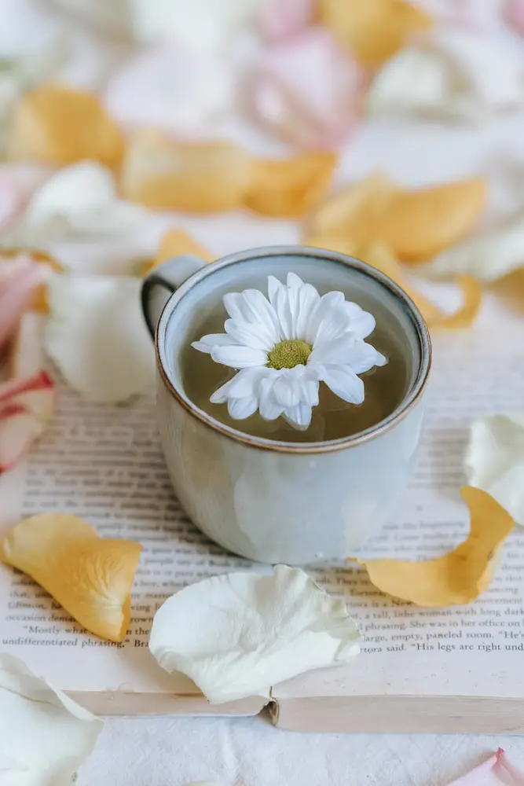
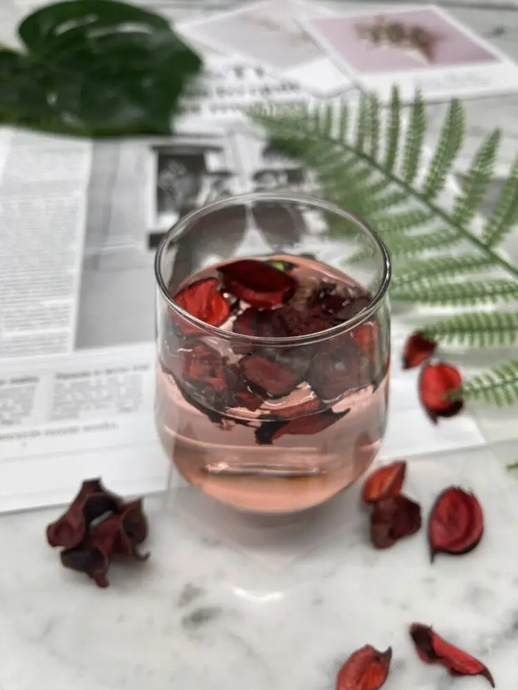
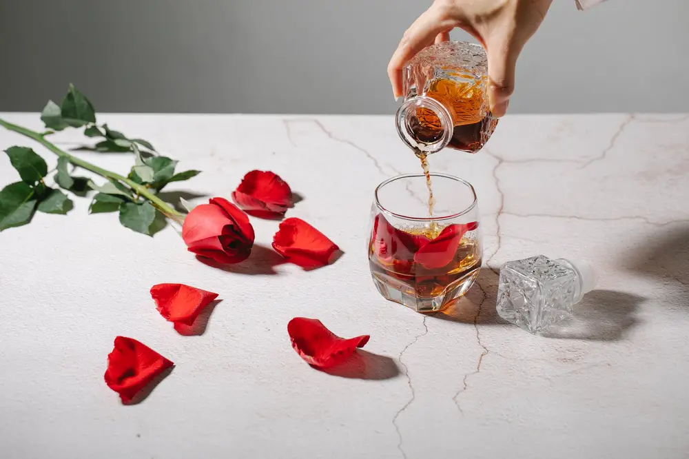
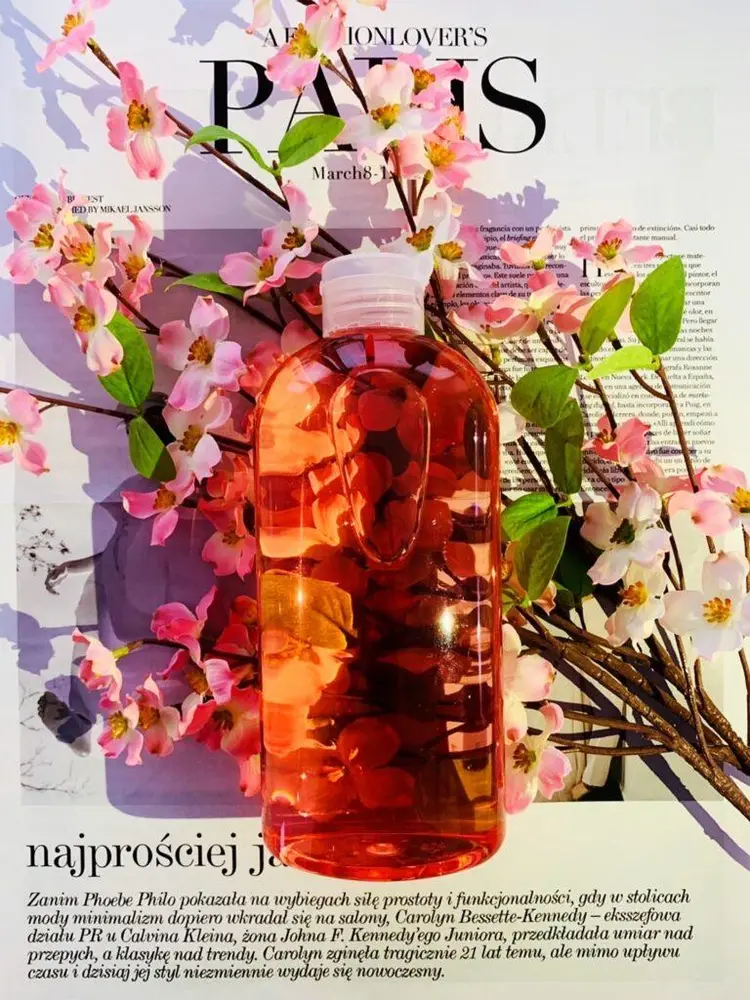

Articles / Tips & trends
Love is in the air with flower syrups!
2022-02-11 · New products, News

Original public content from Yen Chuan. Product claims and specifications remain subject to confirmation by the company.
Since Valentine’s is just around the corner, there’s nothing better than to share a tender moment with your loved ones!
As the blossoms bloom all around you, a flowery drink is the perfect way to set the mood! Want to make a delicious drink for your other half? Read on for some inspiration!

Flower teas
The ever-classic flower tea is not only a perfect mix of tea with the fresh aroma of flowers, but also a visual spectacle – watch the petals bloom inside the brew!
Making this tea is easy – brew up a pot of their favourite teas, add a dash of flowery syrups, and sprinkle in some petals!
Honey floral drinks
Want something sweeter? Try out some honey floral drinks!
Take some honey and dissolve into water, then add the flower syrups and decorate with some flower petals!
With the sweet honey and the flower aroma combined, every sip is the lovely taste of spring! Want to add some extra zing to the drink? Add some lemon juice to make lemonade!


Floral cocktails
Fancy a tipple? Then try out some floral cocktails! Those light fragrances pair well with many types of alcohols, from lighter champagnes to harder gins and other liqueurs.
Try adding a dash of syrup to your evening drink, and pair it with a squeeze of lemon juice!
What kind of flower?
Since it’s Valentine’s Day, the most obvious choice will be rose! However, that’s not all there is – there are many other types to choose from!
Prefer a lighter aroma? Jasmine, Sakura and Camellia are great choices!
Meanwhile Osmanthus and Chrysanthemum have a more unique taste, making them great companions with stronger teas such as oolong and pu-erh. Give it a try!

Wondering how to get those flower syrups? We’ve got you covered!
With our floral syrups, you can easily prepare those drinks in no time at all!